Sleeps 3
2 Bedrooms: One King-Size Bed, One Single Bed
A beautifully renovated Fishermans Cottage located in the picturesque little coastal town of Porthleven on the south coast of Cornwall.
Make a Booking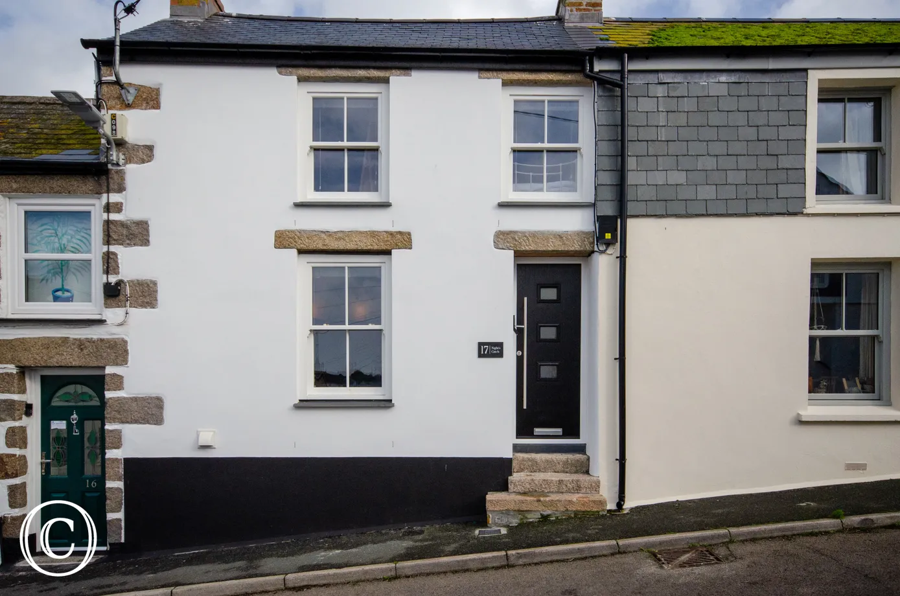
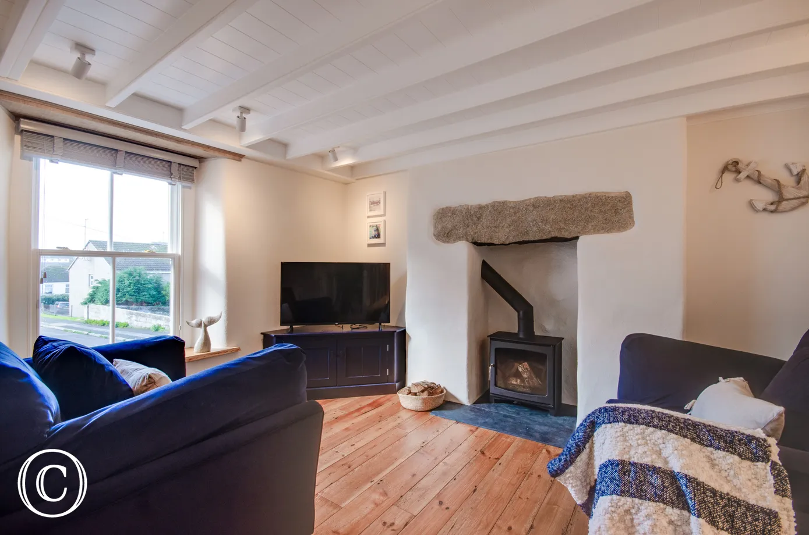
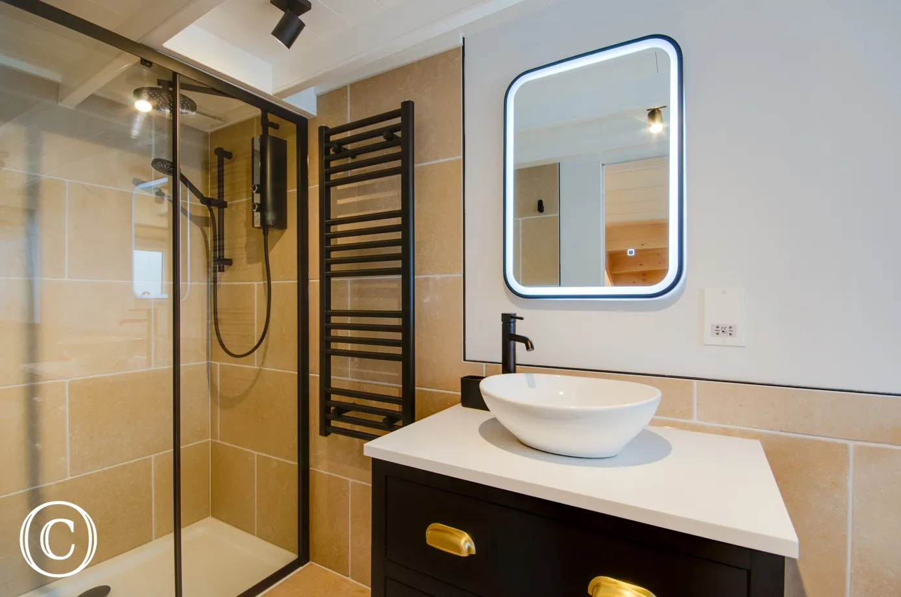
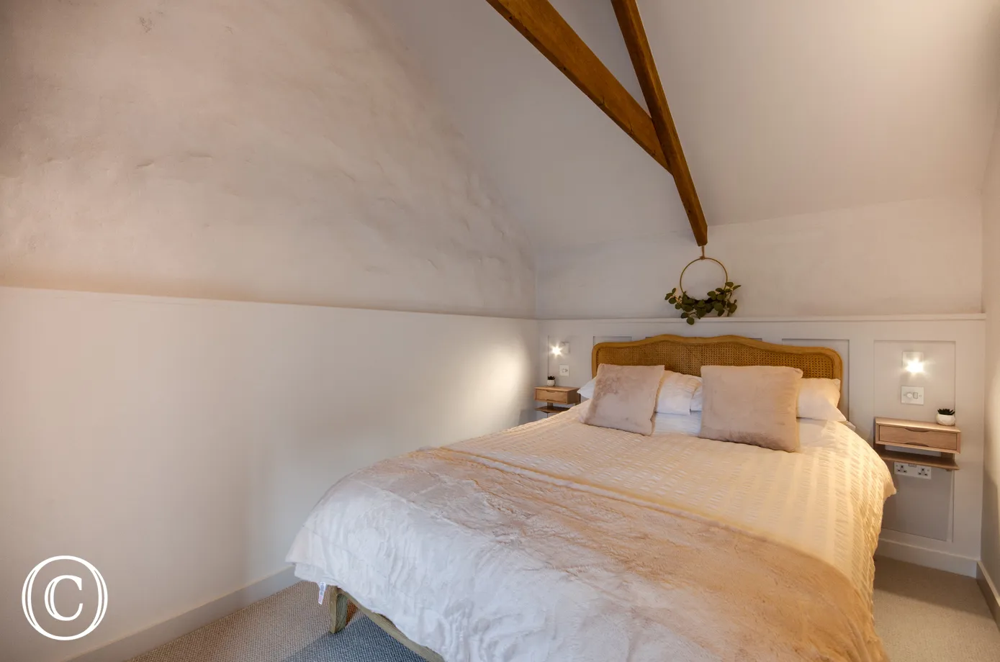
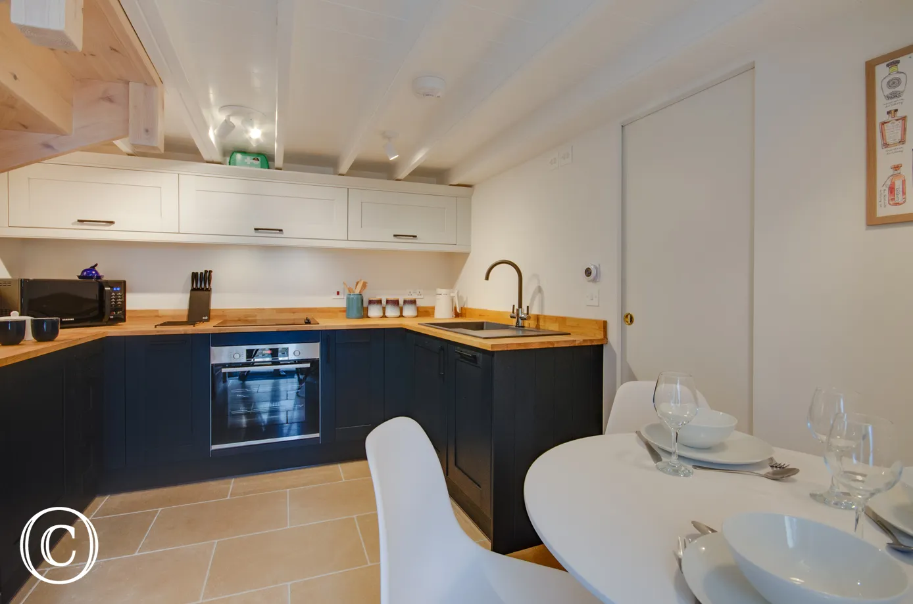
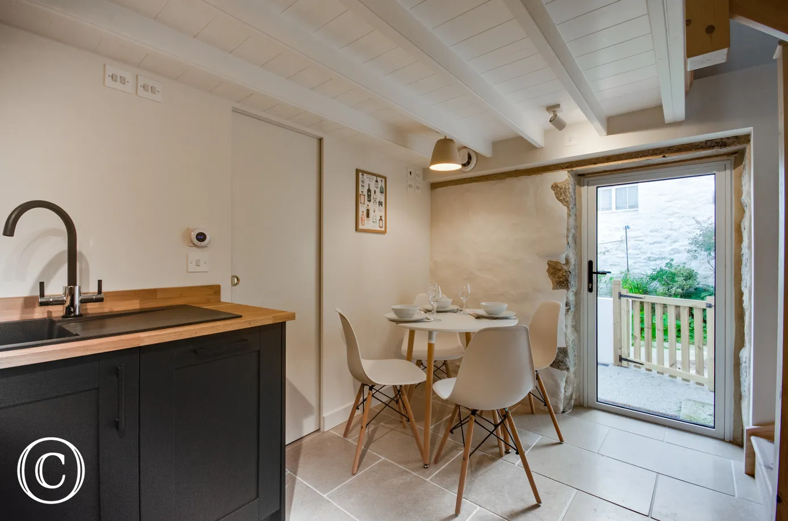
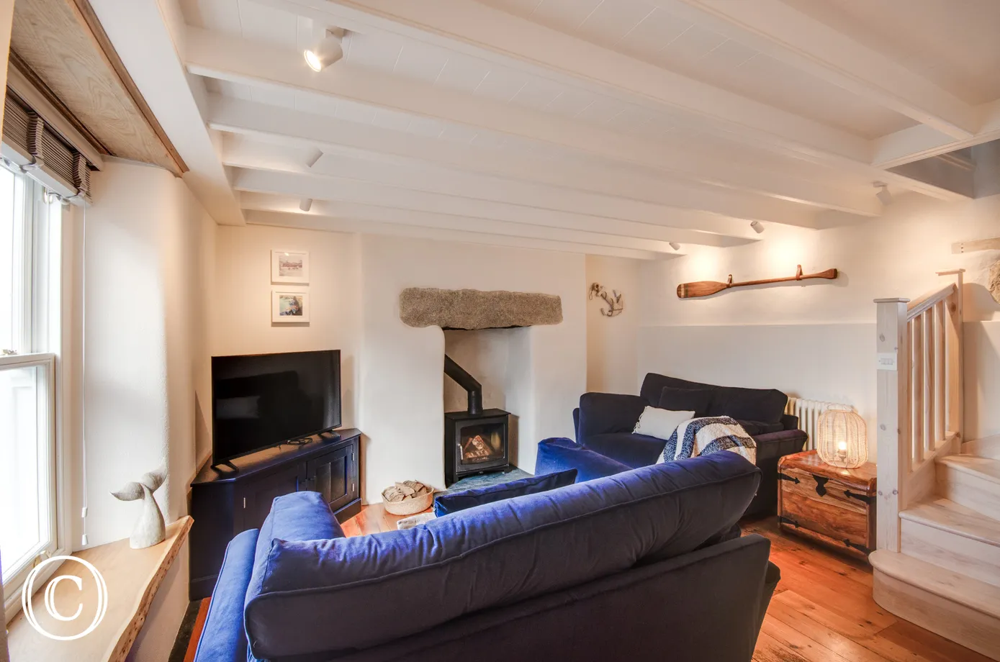
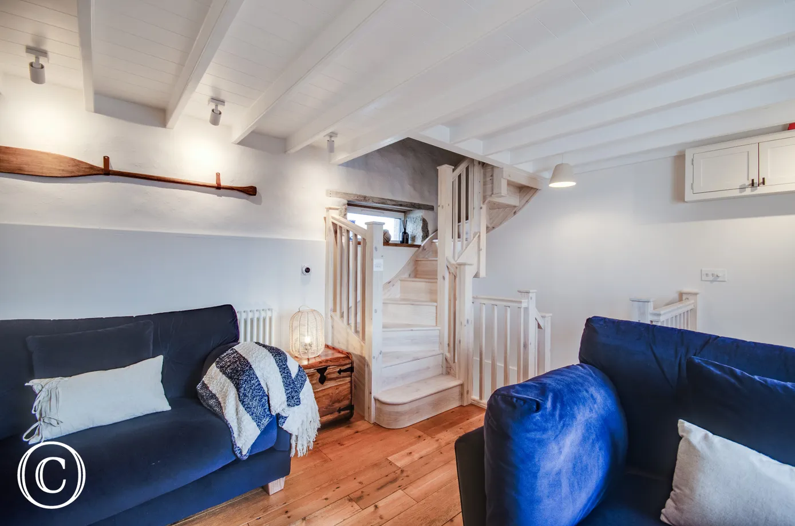
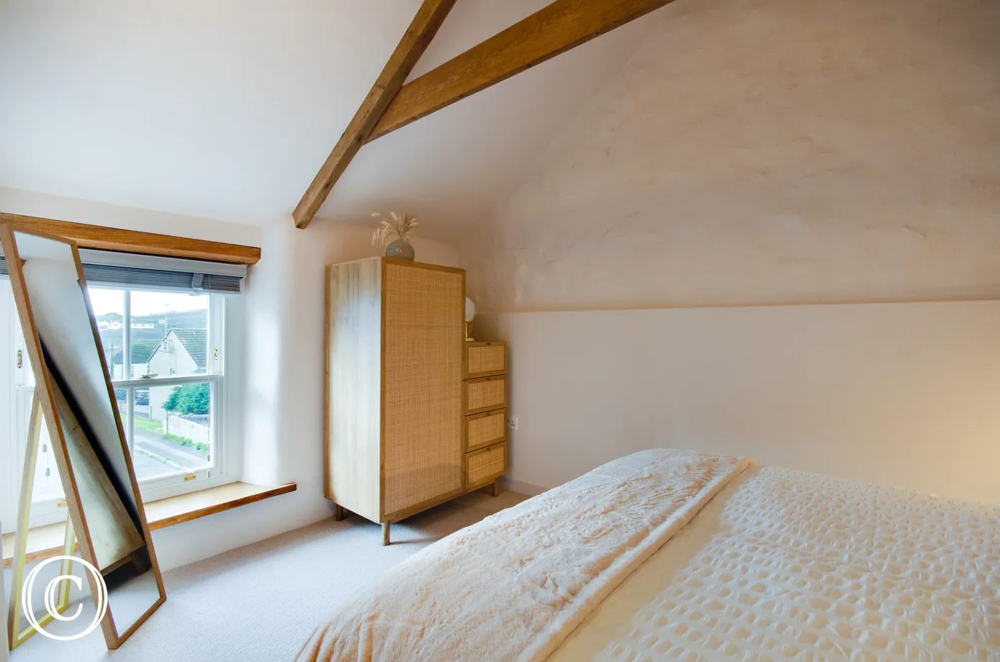
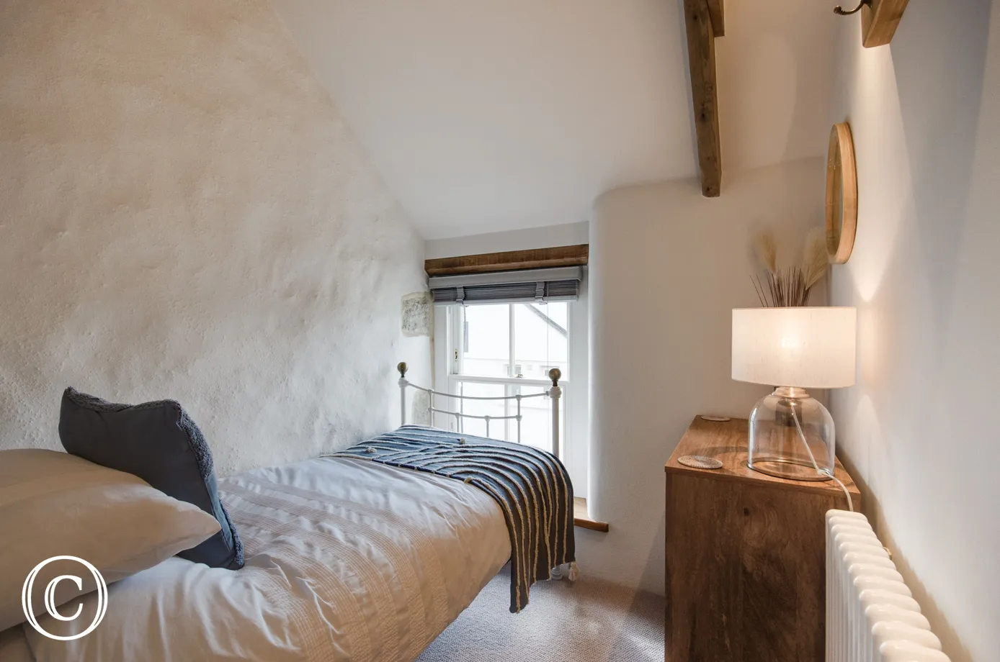
2 Bedrooms: One King-Size Bed, One Single Bed
A official Cornish Horizons - 4 Star rated holiday property
We love pets and are happy to welcome doggies to Night's Catch
Porthleven is a picturesque little coastal town on the south coast of Cornwall. There are plenty of local treasures just waiting to be uncovered. It's many beaches, fabulous seafood restaurants, beautiful harbour and array of independent shops draw people back time and time again. With art galleries and studios to explore; full of works from local painters and craftspeople, it’s all here to take in.
Read MorePorthleven and its surroundings offer plenty of options for outdoor enthusiasts. There are several beautiful walks to explore around the area, such as the coastal path to Loe Bar and Rinsey Head, both of which boast breathtaking views of the coastline.
Read MorePorthleven is well-known for its thriving food and drink scene, with an abundance of local, seasonal produce and fresh seafood. The village has a wide range of restaurants, cafes, and pubs to suit all tastes and budgets. From Michelin-starred restaurants to traditional Cornish pubs, there's something for everyone.
Read More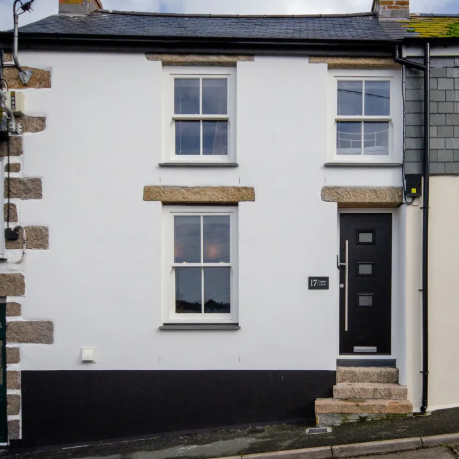
Night’s Catch exudes charm and character. Providing a comfortable and inviting home away from home.
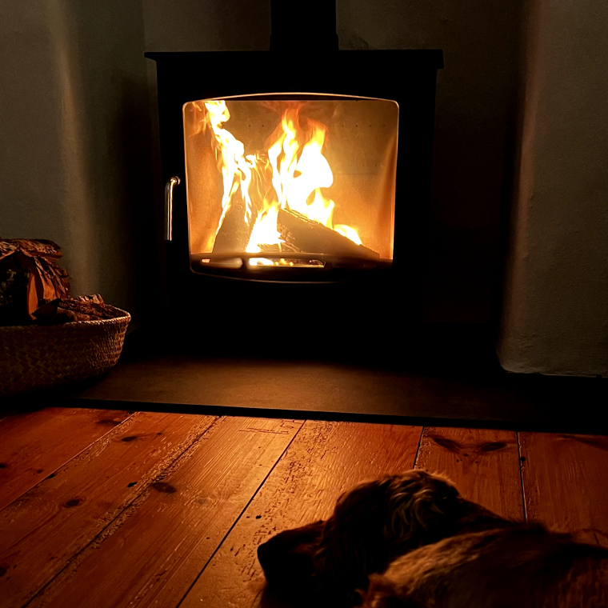
A central wood burning stove located in the lounge. Perfect for enjoying a cuppa or glass of wine after a fresh coastal walk.
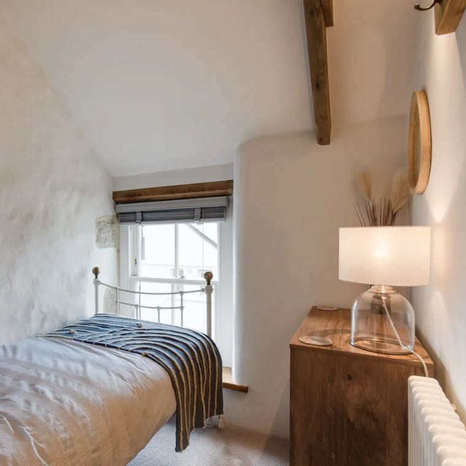
A simple and rustic decor, with well thought out interior finishing that retains character of the original building.
It was wonderful! Thank you so much, the cottage is stunning.
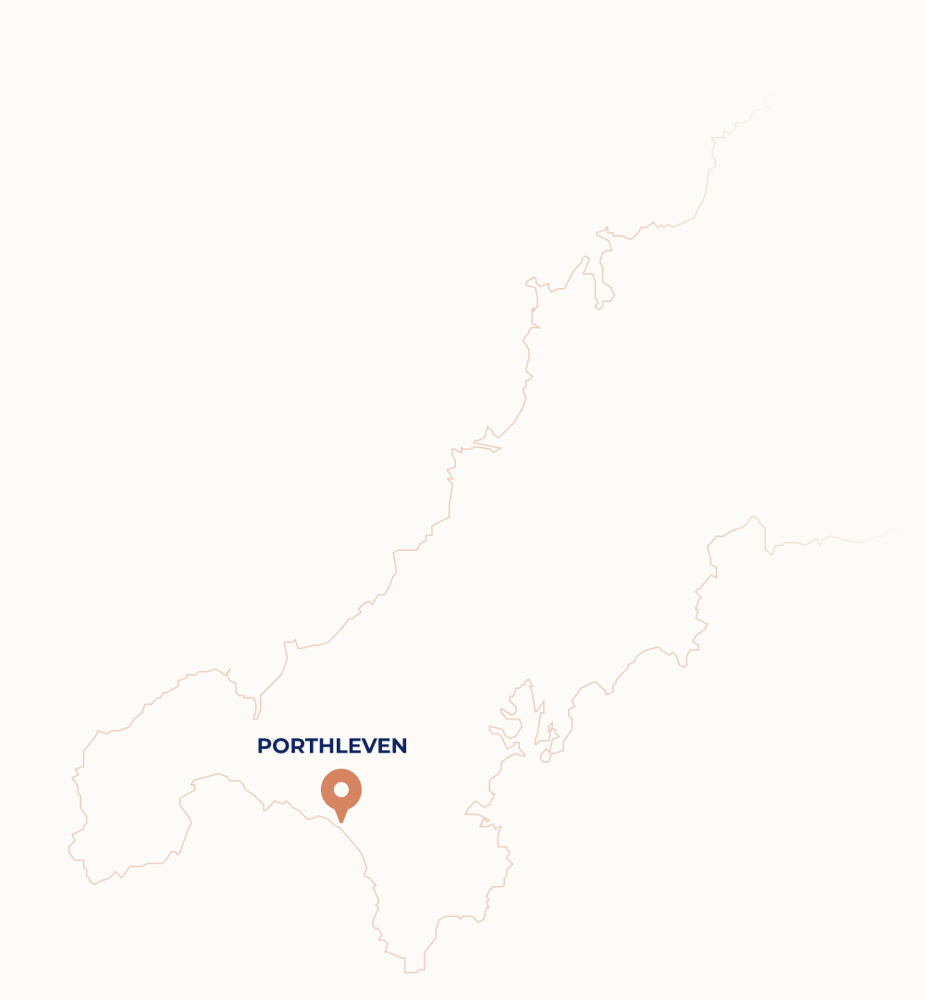